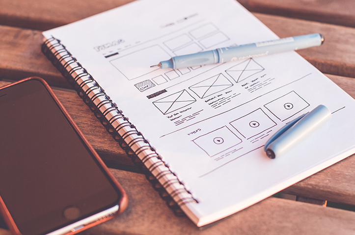

Featured Work
Apps
Learn about the innovative apps that I have built for different kinds of purposes.

Front End Development
See how I employ principles of UI/UX to make successful websites. I have experience working for small and big clients.
Back End Development
Make your web application comunicate with your server flawlessly. I can suggest the best technology combinations to make your app work at its best.